ピクチャーラベル#
- OPENING: 距離または角度が増大している
- CLOSING: 距離または方角が接近している
- CROSSING: 針路の異なる2つのグループが、すれ違うように互いに正面を向く
- PASSING: 距離が離れていた2つのグループが互いに接近し、すれ違うディスクリプティブコール
- MANEUVER (AZIMUTH/RANGE/ALTITUDE): 前述の GROUP が AZIMUTH/RANGE/ALTITUDE 方向に機動している
- ARM: GROUP から離脱するように Maneuver したエレメント
- GROUP: それぞれの角度と距離が3マイル以内のコンタクト群
- CONTACT: GROUP/ARM 内の個々のレーダー反応
- PACKAGE: 地理的に独立した group/contacts のフォーメーションの集まり
- HEAVY: コンタクトが3機以上であると確認されているグループ/パッケージ
- GORILLA: 機数と編隊が不確定かつ友軍機でない大規模な航空機群
- HOT: 脅威が自機に近づく向き
- COLD: 脅威が自機から遠ざかる向き
- FLANK: 左右 110~150° に位置するコンタクト
- BEAM (w/sub-cordinal direction): 左右 70°~110° に位置するコンタクト
- DRAG: 左右 0°~70° (前方象限) に位置するコンタクト
グループ#
- DEEP: LADDER/VIC/CHAMPAGNE/BOX のような3つ以上のグループのうち、最も近いものと遠いものの距離の間隔
- WIDE: WALL/VIC/CHAMPAGNE/BOX のような3つ以上のグループのうち、遠いグループ同士が横に広がっている左右の間隔
- AZIMUTH: 横方向に分かれた2グループのピクチャーラベル。グループ名は方角で表し、NORTH GROUP/SOUTH GROUP もしくは EAST GROUP/WEST GROUP となる
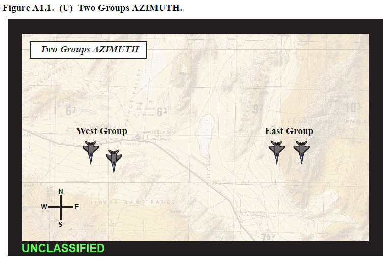
- RANGE: 一直線上に並んで前後に離れた2つのグループのピクチャーラベル。グループ名は最も近いほうから LEAD GROUP、TRAIL GROUP となる
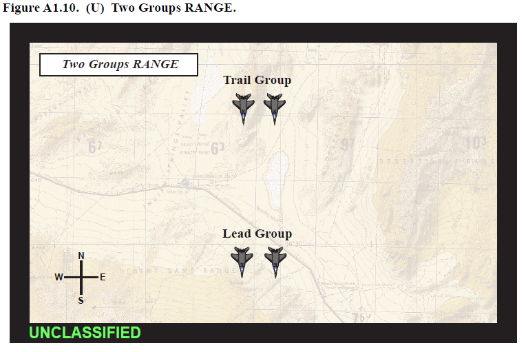
- BOX: 四角形もしくはオフセットした四角形を構成するグループのピクチャーラベル
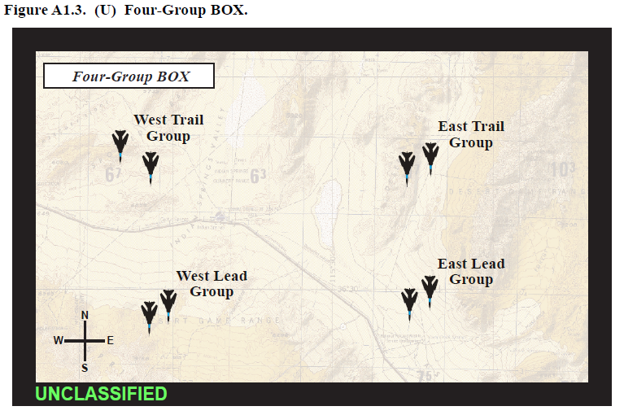
- CHAMPAGNE: 2グループが前方、1グループが後方に位置する3グループのピクチャーラベル。前方のグループ名は NORTH LEAD GROUP/SOUTH LEAD GROUP もしくは WEST LEAD GROUP/EAST LEAD GROUP となり、後方のグループ名は TRAIL GROUP となる
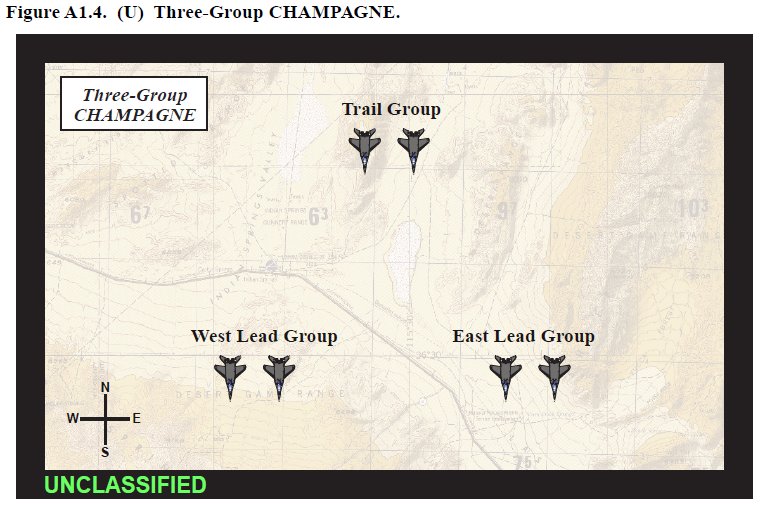
- ECHELON (subcardinal direction): グループの側面後方にもう1つのグループがいるピクチャーラベル
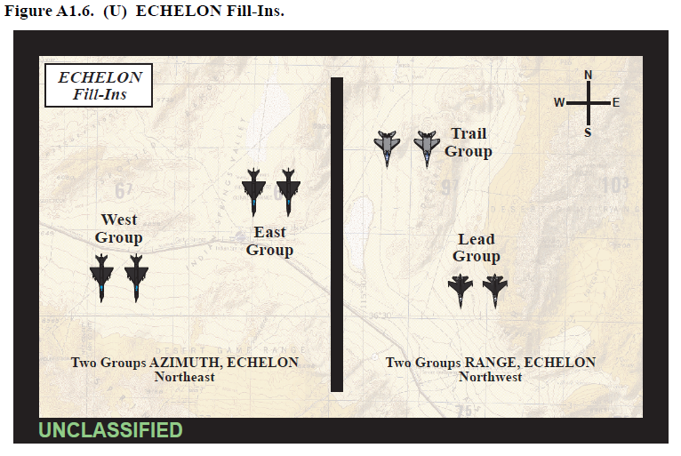
- LADDER: 針路は同じだが距離が離れている3グループ以上のピクチャーラベル。グループ名は最も近いほうから LEAD GROUP、MIDDLE GROUP、TRAIL GROUP となる
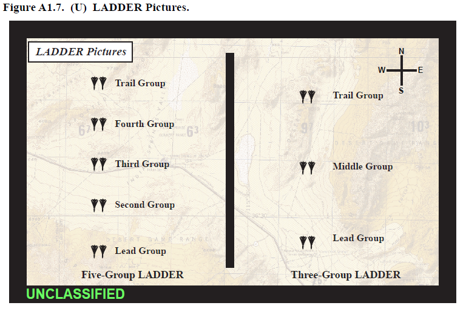
- VIC: 最も近い1グループの左右後方に2グループがいる、3グループからなるピクチャーラベル。グループ名は近いほうを LEAD GROUP 後方の2つを NORTH TRAIL GROUP、SOUTH TRAIL GROUP もしくは EAST TRAIL GROUP、SOUTH TRAIL GROUP となる
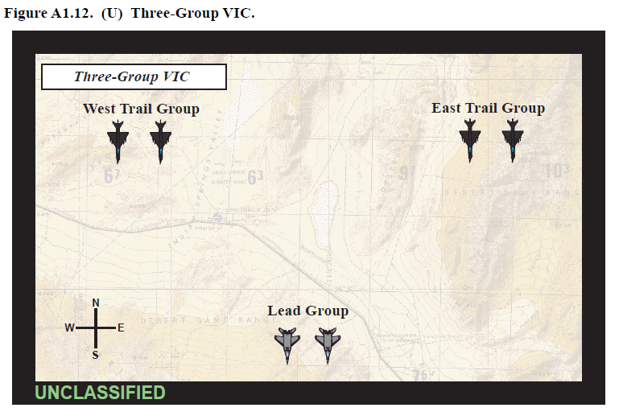
- WALL: 横方向に広がった3つ以上のグループのピクチャーラベル。グループ名は NORTH GROUP、MIDDLE GROUP、SOUTH GROUP もしくは WEST GROUP、EAST GROUP となる
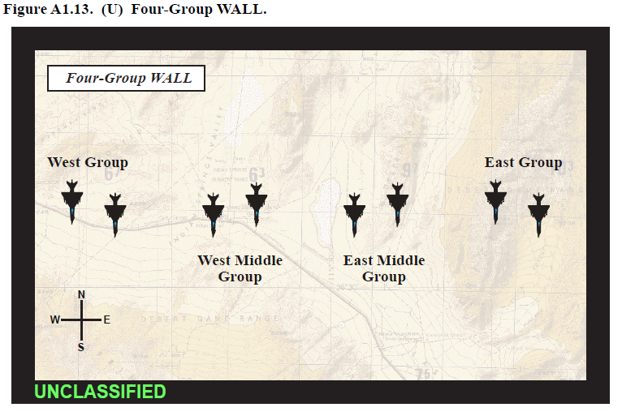
- WEIGHTED (cardinal direction): いずれかの方向に偏っている WALL/LADDER/VIC/CHAMPAGNE のような複数のグループのフォーメーション
インナーグループ#
- (__) ARM: ニューピクチャーとは見なさない同一のシングルグループ内で (north/south/east/west/lead/trail) に機動する CONTACT。機動した結果 GROUP クライテリアから逸脱したエレメント
- NEAR-FAR: グループ内で距離が離れている2つ以上のコンタクトを表すレーダーの表示
- SIDE-SIDE: グループ内で角度的に広がった2つ以上のコンタクト表すレーダーの表示
- BEARING (w/cordinal direction): 1番機の斜め 45° 後方に2番機が位置するグループ内のフォーメーション
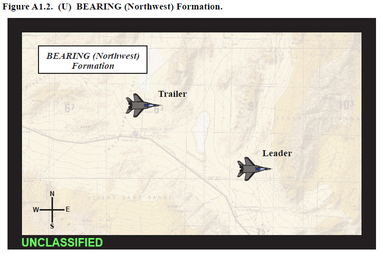
- CONTAINER: 四角形を形成する4つのコンタクトで構成されるグループ内のフォーメーション
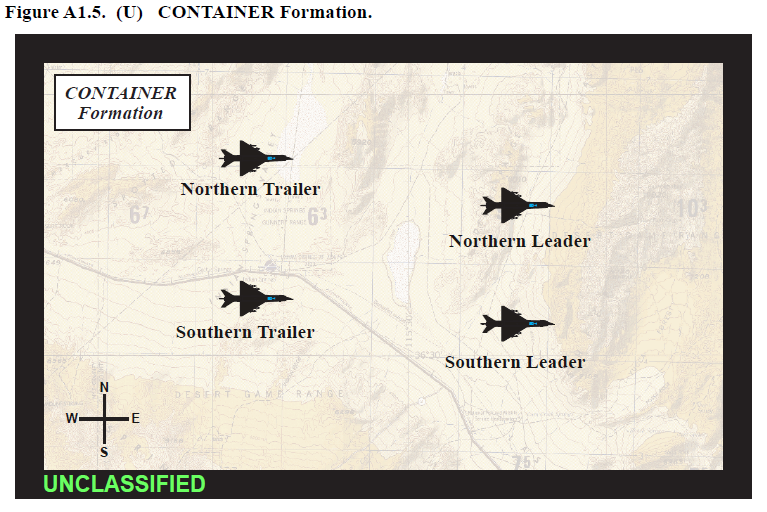
- LEAD TRAIL: 2つ以上のコンタクトが距離方向に並んだグループ内のフォーメーション
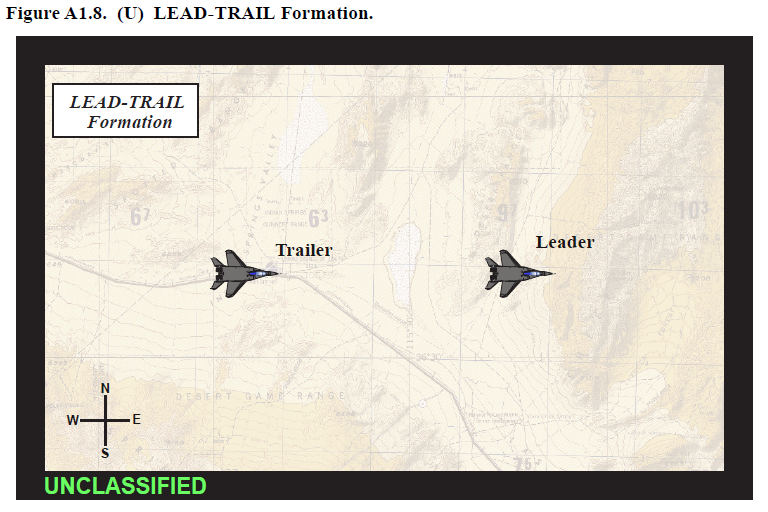
- LINE ABREAST: グループ内で横並びのコンタクト
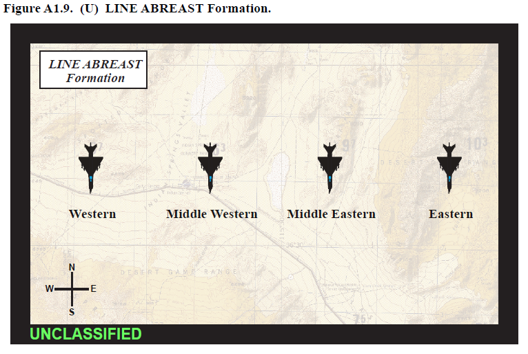
- STINGER: 2機が前方、1機が後方に位置する、合計3機のグループ内のフォーメーション
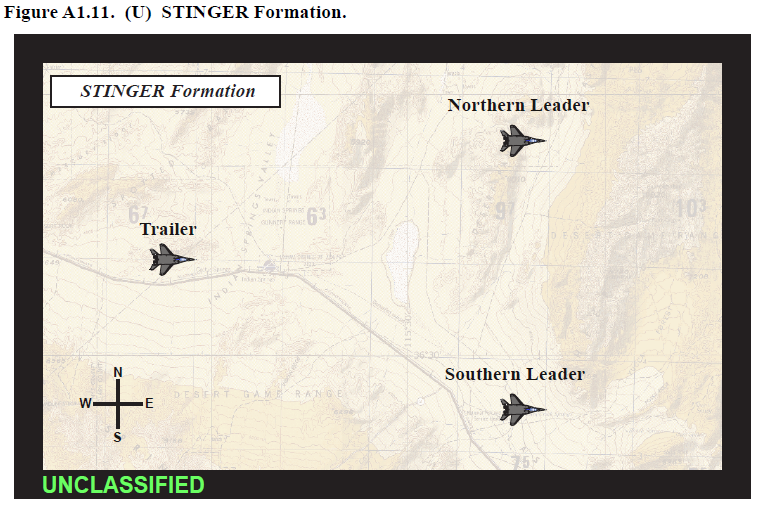
- WEDGE: 先頭の1機の左右後方に2機が LINE ABREAST でいる、合計3機のグループ内のフォーメーション
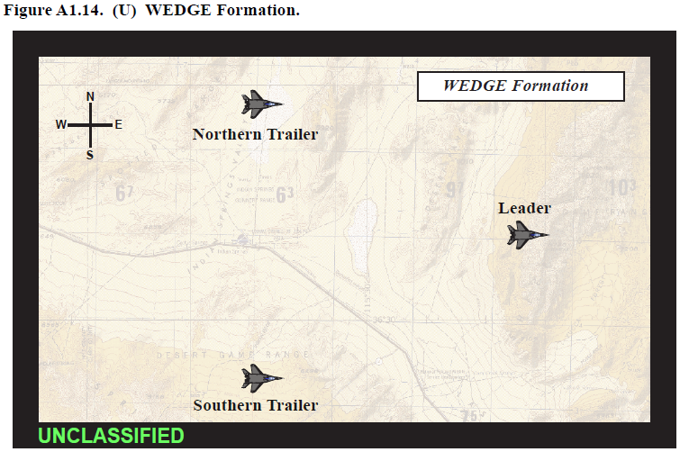
- STACK: グループ内の互いに高度差をとっており、それぞれの角度と距離が3マイル以内の2つ以上のコンタクト
- SWEPT (w/sub corfial direction): リーダーの45度後方にトレイラーが位置するグループ内のフォーメーション
最終更新日: